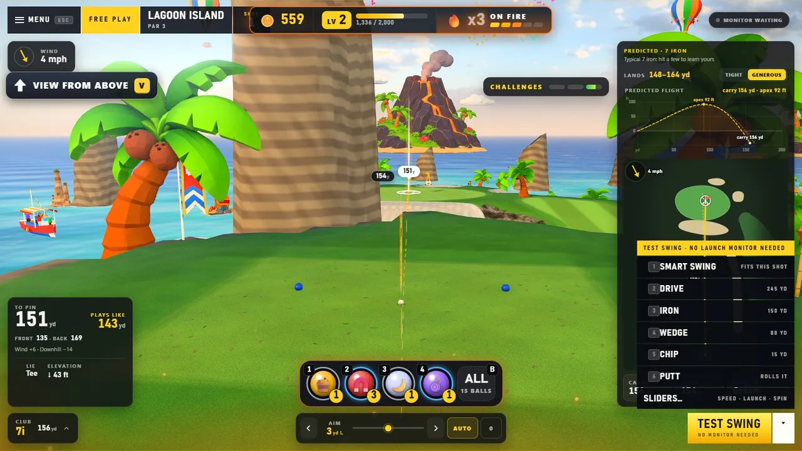

Connect
Plug in your launch monitor
Sim Clash listens where GSPro's Open API listens: GSPro Open Connect, TCP port 921. That is not the same as "works with anything GSPro works with": most launch monitors reach GSPro another way. This page says which ones can feed the game, how, and how sure we are. No monitor yet? Test swings work without one.
What Open Connect is
GSPro Open Connect is a small, publicly documented way for launch-monitor software to hand shots to a simulator. The monitor's connector opens a network connection to the simulator on TCP port 921 and sends each shot as a short JSON message: ball speed, launch angle, direction, spin and spin axis.
Sim Clash listens on port 921 and answers the way GSPro's Open API does. A connector that sends its shots to GSPro's Open API, and has no other tie to GSPro, can send them to Sim Clash instead when GSPro is closed. The game only needs ball data; club data is optional.
The catch. GSPro reaches most launch monitors through connections built into its own connector program: Uneekor, FlightScope, Garmin, Rapsodo, Full Swing, Square, ProTee and others each have their own mode there. Those do not use the Open API and cannot be pointed at another program. Choosing "GSPro" in your launch monitor's software is therefore usually not enough. Only four kinds of setup can feed this game: a maker's own Open API client, an open-source launch monitor, a community connector, and a Foresight GC unit through the bridge built into the game.
- Launch monitormeasures the ball
- Its connectoran Open API client, or a helper program
- TCP 921Open Connect JSON
- Sim Clashplays the shot
Before anything else
Close GSPro. Only one program at a time can listen on port 921. If GSPro, or any other simulator that listens for Open Connect, is running, Sim Clash cannot open the port and no shots will arrive. Close the other simulator, then start Sim Clash.
Start Sim Clash first, then your monitor's connector, so the connector finds something listening when it looks for the simulator. Everything runs on the one PC, and no firewall change is needed for that.
Which launch monitors
This list is generated from the catalogue the game's own connection wizard uses, so the site, the game and the documentation say the same thing. It holds 30 launch monitors, was last checked on 2026-11-23, and is careful on purpose: nothing is called tested unless a ball has been hit with it on a real rig. Today that is 1 unit. Every claim, with its source, is in docs/launch-monitors.md in the repository.
Tested (1)
Works on a real rig.
| Launch monitor | Models | Comes in through | Licence of that connector |
|---|---|---|---|
| Foresight GCQuad | GCQuad | the built-in Foresight bridge and GSPconnect (the connector inside your own GSPro installation) | GSPro's own: not included with the game |
Expected to work (8)
Its own connector is documented to send Open Connect, or it is the same connector as a tested unit. Nobody has tried it with this game yet.
| Launch monitor | Models | Comes in through | Licence of that connector |
|---|---|---|---|
| Foresight GC3 / GCHawk / QuadMAX / Falcon | GC3, GCHawk, GCQuad MAX (QuadMAX), Falcon | the built-in Foresight bridge and GSPconnect (the connector inside your own GSPro installation) | GSPro's own: not included with the game |
| Bushnell Launch Pro | Launch Pro | the built-in Foresight bridge and GSPconnect (the connector inside your own GSPro installation) | GSPro's own: not included with the game |
| Square Golf (Home) | Square Golf launch monitor (Home) | SQG GSPro Connect (Square's own) | Square's own |
| NVisage N1 | NVisage N1 | N-Connect (NVisage's own) | NVisage's own |
| Bullseye LM | Bullseye LM | Bullseye's own software (its GSPro / Open API connection) | Bullseye's own |
| GolfIn Idra | GolfIn Idra | GolfIn's own software (its GSPro / Open API connection) | GolfIn's own |
| PiTrac | PiTrac (open-source, build it yourself) | PiTrac's own GSPro interface | GPL-2.0 |
| OpenFlight | OpenFlight (open-source, build it yourself) | OpenFlight's own GSPro (OpenConnectV1) connector | AGPL-3.0-or-later |
Community / unofficial (12)
Needs an unofficial helper program between the launch monitor and the game. Untested here.
| Launch monitor | Models | Comes in through | Licence of that connector |
|---|---|---|---|
| Foresight GC2 | GC2, GC2 + HMT | gspro-gc2-connector | no licence file |
| Uneekor EYE XO / XO2 / EYE MINI / QED | EYE XO, EYE XO2, EYE MINI, EYE MINI LITE, QED | Uneekor VIEW watcher (tools/uneekor-watch.js, part of this project) | MIT |
| Garmin Approach R10 | Approach R10 | gsp-r10-adapter | MIT |
| Garmin Approach R50 | Approach R50 | MLM2PRO-GSPro-Connector (device: Garmin R50) | GPL-3.0 |
| FlightScope Mevo+ / Mevo Gen2 / Xi | Mevo+, Mevo Gen2, Xi | flighthook | MIT / Apache-2.0 |
| SkyTrak / SkyTrak+ | SkyTrak+, SkyTrak (original) | OpenSkyPlus2 (with its GSPro plugin) | closed source, free to use |
| Rapsodo MLM2PRO | MLM2PRO | MLM2PRO-GSPro-Connector | GPL-3.0 |
| Square Golf Omni | Square Omni | flighthook | MIT / Apache-2.0 |
| Full Swing KIT | Full Swing KIT | MLM2PRO-GSPro-Connector (device: Fullswing Kit) | GPL-3.0 |
| TrackMan | TrackMan 4, TrackMan iO | MLM2PRO-GSPro-Connector (device: Trackman) | GPL-3.0 |
| Voice Caddie Swing Caddie SC4 / SC4 Pro | Swing Caddie SC4, Swing Caddie SC4 Pro | MLM2PRO-GSPro-Connector (device: Voice Caddie SC4) | GPL-3.0 |
| TruGolf Apogee | TruGolf Apogee | MLM2PRO-GSPro-Connector (device: TruGolf Apogee Apex) | GPL-3.0 |
Not supported yet (9)
No way in that we know of. You can still play with test swings.
| Launch monitor | Why not |
|---|---|
| FlightScope X3 / X2 / Mevo (original) | No connector was found that sends these units' shots as Open Connect. GSPro reaches the X2 and X3 through its own private FlightScope connection; FlightScope says the original Mevo does not support simulator courses, and opens the X3C to approved integrators only. |
| ProTee VX | ProTee Labs used to connect to GSPro through the Open API, which would have reached this game. Since ProTee Labs 1.8.14 it uses GSPro's own built-in connection, and a user has reported the Open API route as no longer supported. If your ProTee Labs still has a GSPro CONNECT button under Game Options, it may be worth a try with GSPro closed: nobody has confirmed either way. |
| OpenLaunch NOVA | The NOVA reaches GSPro through GSPro's own built-in connection, which cannot be pointed at this game. It is the best candidate for a direct connection, though: OpenLaunch publishes a local API (JSON over TCP and WebSocket, found on the network automatically) with an Apache-2.0 developer guide. See the roadmap. |
| OptiShot Nova / BallFlight / Orbit | OptiShot's units run OptiShot's own Orion software. No connector was found that sends their shots to GSPro or as Open Connect, and they are not on GSPro's supported list. (The Nova on GSPro's list is OpenLaunch's, a different product.) |
| Golfzon WAVE | No connector was found that sends the WAVE's shots to GSPro or as Open Connect, and it is not on GSPro's supported list. |
| GolfJoy GDS / GR / Spica | GolfJoy units reach GSPro through GSPro's own built-in connection over a fixed private network link, which cannot be pointed at this game. GolfJoy had an Open API route before that; whether it still works is not known. |
| VTrack | VTrack reaches GSPro through GSPro's own built-in connection, started from VTrack's toolkit. How its shots travel is not documented, and no connector was found that sends them as Open Connect. |
| Bluetees RAINMAKER | The RAINMAKER reaches GSPro through GSPro's own built-in connection (paired with a PIN), which cannot be pointed at this game. |
| Ernest Sports ES16 / ES Tour Plus | No connector was found that sends these units' shots to GSPro or as Open Connect, and they are not on GSPro's supported list. |
If you try any of these, working or not, please tell us in an issue: one report moves a launch monitor up a tier, or stops other people wasting an evening.
Connecting one
The game walks you through it. The first time it starts, and again from SETTINGS > LAUNCH MONITOR > SET UP MY LAUNCH MONITOR, the connection wizard asks which launch monitor you have and shows the steps for that one, with this PC's address filled in and a live status light. The same steps for every launch monitor are in docs/launch-monitors.md.
A connector that is not on the list
Close GSPro if it is open: both use the same port.
Start Sim Clash, then your launch monitor's GSPro connector.
Look for its GSPro or Open API address setting, and enter
127.0.0.1(the connector runs on this PC) or this PC's network address, port921.Connect, then hit a ball. The status chip in the game turns green when the connector is attached.
If the connector has no address setting and looks for GSPro itself, it is one of GSPro's own connections and cannot be pointed at the game.
A note for Uneekor owners
Uneekor is in the community tier. GSPro's own Uneekor connection is private to GSPro, so picking GSPro in Uneekor VIEW does not reach the game. What the game carries instead is a small watcher from Open-Birdie that reads the shot files VIEW writes: the desktop game starts it by itself when it finds VIEW's ShotData folder on the PC (set the environment variable BIRDIE_NO_WATCH=1 to switch that off). Nobody on this project has tested it, so a report from a Uneekor owner would be very welcome.
Foresight GC monitors
Experimental. This path has been tested on one GCQuad rig, the developer's own. The GC3, GCHawk, QuadMAX, Falcon and the Bushnell Launch Pro use the same connector and are expected to work, but nobody on the project has tried them; the GC2 does not use it (see the community tier). Ball data only: the connector's log has no club data. Please tell us how it goes.
Foresight GC monitors reach GSPro through a connector program that comes inside a GSPro installation (GSPconnect). That connector does not speak Open Connect, so pointing it at port 921 does nothing. Sim Clash therefore has a small bridge built in: the game stands in for GSPro so that the connector attaches to it, and reads each shot from the connector's own log file. It only reads that log; it writes nothing into your GSPro folder.
- GC monitormeasures the ball
- GSPconnectthe connector from your GSPro installation
- Built-in bridgeinside Sim Clash
- Sim Clashplays the shot
Have your own GSPro installed on the same PC. You do not run GSPro itself, but the Foresight connector is part of it and signs in with your GSPro licence. Sim Clash does not include the connector and does not change it. Please check that your GSPro terms allow this use before you rely on it.
Close GSPro, and any other bridge program you use with that connector. They want the same connection the game's bridge needs, and only one program can hold it.
Start Sim Clash. When it finds the connector on the PC, the bridge comes up by itself. There is nothing else to install or start.
Start the Foresight connector the way you would for GSPro, and check that it finds your monitor. If it says no Foresight devices were found, the monitor is switched off, asleep or not reachable from the PC; nothing in Sim Clash can fix that.
Hit a ball. The status chip in the game turns green and the shot flies.
Good to know.
- The bridge has a switch under SETTINGS > LAUNCH MONITOR: Auto (the default: on whenever the connector is found on the PC), On or Off. The same screen shows what the bridge is doing.
- It looks for the connector in GSPro's default folder,
C:\GSProV1\Core\GSPC. If your GSPro lives somewhere else, set the folder on that screen. - Shots already in the connector's log when the game starts are never replayed.
- Going back to GSPro? Close Sim Clash first, or switch the bridge off. While the game holds the connector, GSPro cannot have it.
- Already using a separate bridge program for this connector, such as Open Connect Bridge? You can keep it: switch the built-in bridge Off so the two do not compete, and let yours send to port 921 as before.
Is it connected?
- The status chip in the corner reads WAITING FOR A LAUNCH MONITOR until a connector is attached. Then it turns green and reads LAUNCH MONITOR CONNECTED.
- Main menu > SETTINGS > LAUNCH MONITOR shows the same status, and what the game is listening for.
- Still waiting? Check that the other simulator really is closed, that Sim Clash was started before the connector, and that the connector is aiming at port 921 on this PC.
- Connected but the shots look wrong? See odd units below and the troubleshooting list.
Two PCs, odd units
Connector on a different PC
The game accepts Open Connect from other machines on your network. On the PC running Sim Clash, allow inbound TCP 921 in Windows Firewall, and point the connector (or the bridge's target) at that PC's address instead of 127.0.0.1.
Shots flying about half as far as they should
Open Connect speeds are in miles per hour. A connector that sends metres per second makes every shot play about 2.2 times too short. Start the game with the environment variable BIRDIE_SPEED_SCALE=2.23694 to correct it.
A different port
BIRDIE_OC_PORT moves the game's listener off 921, for connectors that can be told to use another port.
No launch monitor? Try it with test swings
You can play the whole game, matches included, without hitting a real ball. In a game, press T or use the TEST SWING button in the corner ("no monitor needed").
- SMART SWING plays a sensible shot for wherever the ball lies: a drive off the tee, a wedge from 80 yards, a putt on the green.
- Or pick one yourself: DRIVE (245 yards), IRON (150), WEDGE (80), CHIP (15) or PUTT.
- SLIDERS opens the full controls, for any ball speed, launch angle, direction and spin you like.
The game treats a test swing exactly like a shot from a monitor: it is graded, it scores, it wins and loses holes. It is the quickest way to see whether Sim Clash is for you before you move a single cable.
